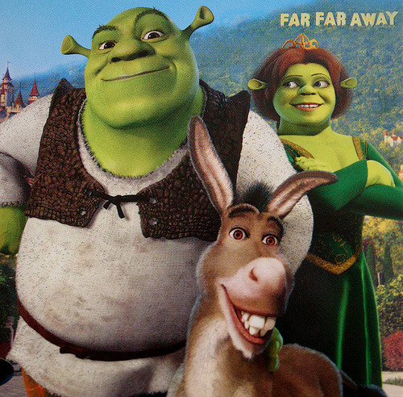

10.Earth Defense Force 4.1
My type of game. This one gives it all and it gives it good. Fast, frenetic, fun, nothing
more. And in this day and age of too serious cable, can't we have a little bit of stupid,
unpretentious fun? Like why does everything have to be so high quality made and serious?
Some times, things SHOULD be whack. Intentionally.
9.Ninety Nine Nights 2
Maybe a pretentious critic wouldn't put this on his or her cliche predictable list, but I say
nay. This game is....pretty good. And sometimes pretty good is better than those masterpieces,
I mean who understands most masterpieces anyway, like do people actually ENJOY playing them?
At least this game, well I kinda forgot the story, and characters, but it's got mindless kills,
so therefore it must be good right?
8.Family Guy The Game
I'm not exactly a fan of the tv show.It's a little too quick witted for me and kinda
liberal.Lots of 80's inside joke references made out of touch old people and meant to
entertain self proclaimed "intellectuals". I also don't like the constant references to
the so called "dumbing down" of America. What was I writing about again? Anyway the game
is simple and fun at least.

7.Shrek 2 The Game
One of my favorite childhood games.Haven't played it in years. But from what I remmember
and feel, it was great, so it must still hold up right? Shrek 2 will make you feel better
for getting through it's anchient archaic game design and mastering it's cumbersome combat.
These design decisions were done on purpose to make the player feel even more badass
by the time you get through it kind of like Dark Souls. As the originator of the Dark Souls
formula Shrek 2 holds up.

6.The Simpsons Hit and Run
The Simpsons blows! But the game rocks and I daresay it beat Grand Theft Auto in terms
of game design. It has that old school archaidy feel and jokes to boot, yellow characters.
There's just something about cartoony characters driving that's just better than oh so serious
Grand Theft Auto.